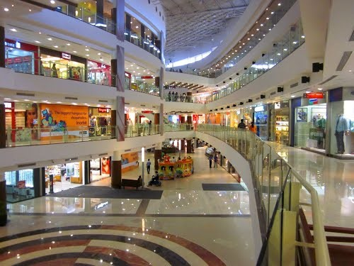
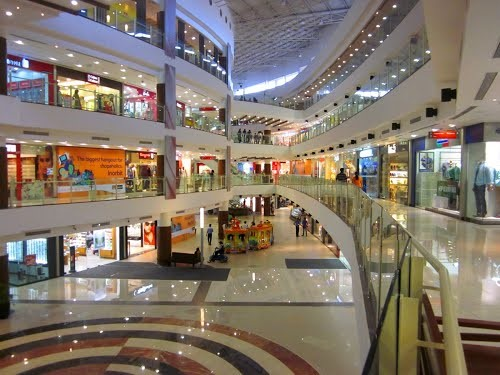

Malls in Pune
Malls in Pune
Malls in Pune
Malls in Pune
Phoenix Market City Pune is situated in Viman Nagar, an area in the eastern part of Pune.
Retail Stores: The mall houses a variety of retail stores offering a range of products, including fashion, electronics, home goods, and more. Entertainment: Phoenix Market City often includes entertainment options such as a cinema complex, gaming zones, and occasionally hosts events and performances. Dining: The mall features numerous restaurants, cafes, and food courts, providing a diverse range of cuisines.
Phoenix Market City Pune typically hosts both national and international brands across various categories, including fashion, accessories, electronics, and lifestyle.
The mall may have an entertainment zone, including a multiplex cinema, gaming arcade, or other recreational facilities.
Amanora Mall is located in the Amanora Park Town area of Pune.
Retail Stores: Amanora Mall houses a variety of retail outlets offering a wide range of products, including fashion, electronics, home goods, and more. Entertainment: The mall is likely to feature entertainment options such as a cinema complex, gaming zones, and occasionally hosts events and performances. Dining: Amanora Mall includes a diverse range of dining options, including restaurants, cafes, and food courts.
Amanora Mall typically hosts a mix of both national and international brands, covering various categories like fashion, accessories, electronics, and lifestyle.
The mall may have an entertainment zone, which could include a multiplex cinema, gaming arcade, or other recreational facilities.


Seasons Mall is situated in the Magarpatta City area of Pune.
Retail Stores: Seasons Mall is known for hosting a variety of retail stores offering a diverse range of products, including fashion, electronics, home goods, and more. Entertainment: The mall typically features an entertainment zone, which may include a multiplex cinema, gaming zones, and other recreational facilities. Dining: Seasons Mall includes numerous dining options, such as restaurants, cafes, and food courts, offering a variety of cuisines.
The mall is likely to host both national and international brands across various categories like fashion, accessories, electronics, and lifestyle.
Seasons Mall is known for its entertainment offerings, providing visitors with options for leisure and recreation.
Pavilion Mall is located in the Shivaji Nagar area of Pune.
Retail Stores: Pavilion Mall is known for hosting various retail outlets offering a diverse range of products, including fashion, electronics, and other consumer goods. Entertainment: The mall may feature an entertainment zone, such as a multiplex cinema or gaming area, providing additional recreational options for visitors. Dining: Pavilion Mall typically includes dining options, such as restaurants, cafes, and food courts, offering a variety of cuisines.
The mall likely hosts a mix of both national and international brands, covering different categories like fashion, accessories, electronics, and lifestyle.
Pavilion Mall may have an entertainment zone with facilities like a multiplex cinema or gaming arcade.
Kumar Pacific Mall is situated in the Shankar Sheth Road area of Pune.
Retail Stores: Kumar Pacific Mall hosts a variety of retail outlets, offering a range of products including fashion, electronics, home goods, and more. Entertainment: The mall may feature an entertainment zone, which could include a multiplex cinema, gaming zones, and other recreational facilities. Dining: Kumar Pacific Mall includes dining options such as restaurants, cafes, and food courts, providing visitors with a variety of culinary choices.
The mall likely features both national and international brands across different categories like fashion, accessories, electronics, and lifestyle.
Kumar Pacific Mall may have an entertainment zone to cater to the leisure and recreational needs of visitors.

SGS Mall, or Sohrab Hall, is located in the Camp area of Pune.
Retail Stores: SGS Mall is known for housing a variety of retail outlets offering products such as fashion, accessories, electronics, and more. Entertainment: While it may not be as extensive as larger malls, SGS Mall may offer some entertainment options or events from time to time. Dining: The mall includes dining options such as restaurants and cafes, providing visitors with culinary choices.
SGS Mall likely features a mix of local and well-known brands, covering various categories to cater to different shopping needs.

Westend Mall is situated in the Aundh area of Pune.
Retail Stores: Westend Mall hosts a variety of retail outlets offering a range of products, including fashion, electronics, home goods, and more. Entertainment: The mall typically features an entertainment zone, which may include a multiplex cinema, gaming zones, and other recreational facilities. Dining: Westend Mall includes dining options such as restaurants, cafes, and food courts, providing visitors with a variety of culinary choices.
The mall likely features both national and international brands across different categories like fashion, accessories, electronics, and lifestyle.
Westend Mall may have an entertainment zone to cater to the leisure and recreational needs of visitors.
Inorbit Mall is situated in the Viman Nagar area of Pune.
Retail Stores: Inorbit Mall hosts a wide range of retail outlets offering diverse products, including fashion, electronics, home goods, and more. Entertainment: The mall typically features an entertainment zone with facilities such as a multiplex cinema, gaming zones, and other recreational activities. Dining: Inorbit Mall includes various dining options, including restaurants, cafes, and food courts, providing visitors with a variety of culinary choices.
The mall is known for featuring both national and international brands across different categories like fashion, accessories, electronics, and lifestyle.
Inorbit Mall's entertainment offerings contribute to providing a holistic shopping and leisure experience for visitors.
 
